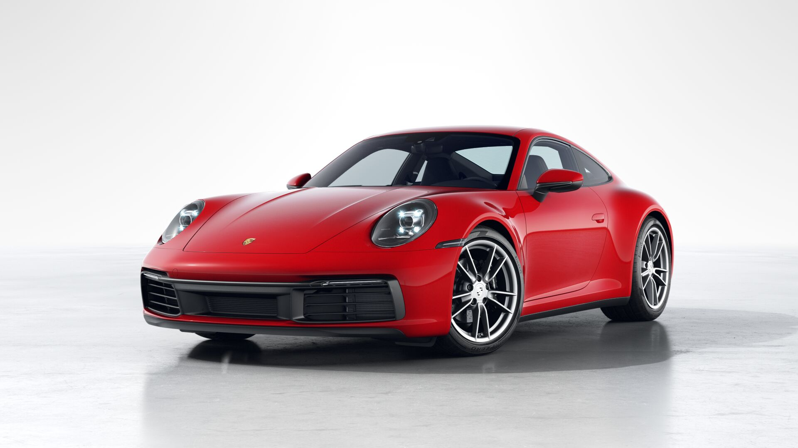
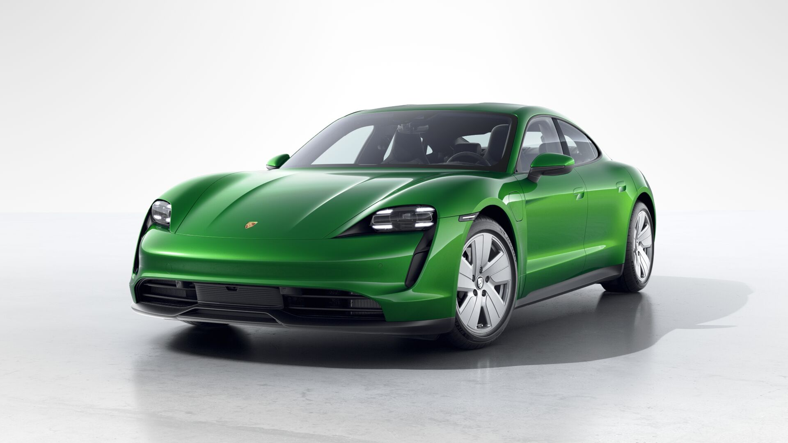
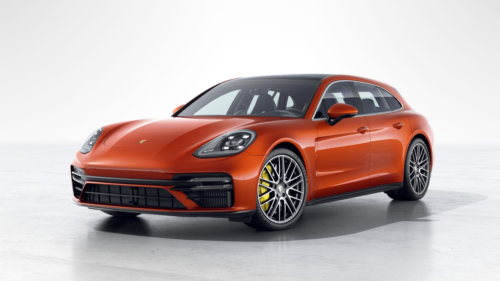
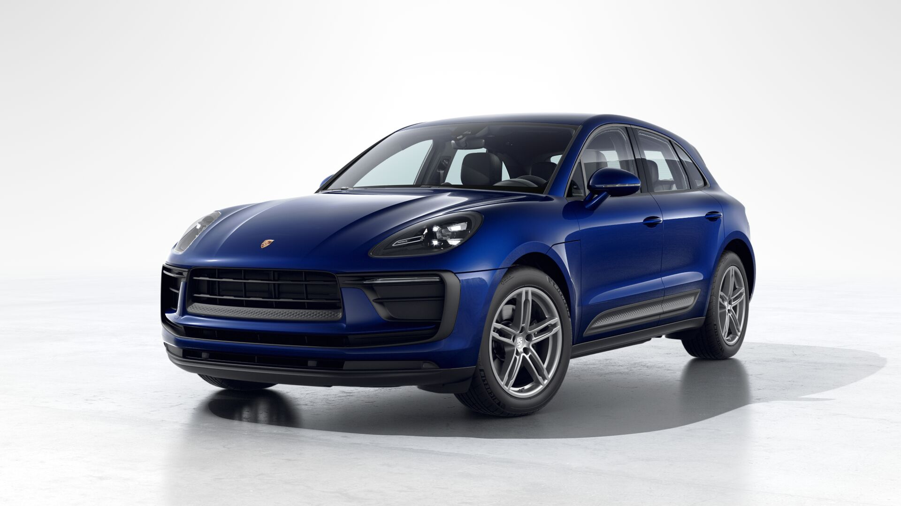
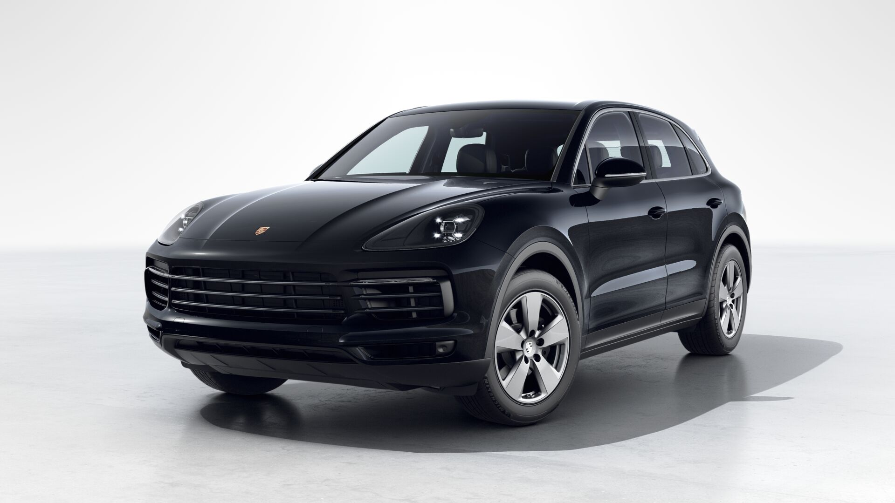

911
Новий 911 увібрав риси всіх своїх попередників: він нагадує про минуле та дає уявлення про майбутнє. Силует: культовий. Дизайн: класика, що не старіє. Технології: завжди на крок попереду, але неможливі без спортивних перемог минулого. Ми рухаємось у майбутнє на 911 восьмого покоління.

TAYKAN
Завдяки своїй комплексній інноваційній концепції Taycan готовий вражати. Він втілює наше всеохоплююче бачення ідеального електричного спортивного автомобіля. Він наділений легендарним характером Porsche, даруючи яскраві емоції і максимум задоволення від водіння. Його інноваційний дизайн, технології, динаміка і електричний привід змінюють сьогодення. Він вражає, захоплює, надихає. Taycan – електрична стихія.

PANAMERA
Чи може бути мрія логічною? І чи має вона взагалі бути такою? Мабуть ні. На нашу думку, чим неймовірнішою здається ідея на початку, тим більш захоплюючим виявляється результат. І тоді за цю ідею варто боротись. Так було і з Panamera. Спортивний автомобіль для чотирьох? З вражаючою динамікою та великим комфортом?

MACAN
5 дверей, 5 місць і унікальний, неповторний та нестримний характер. У своєму найновішому поколінні Macan залишається спортивним автомобілем в сегменті компактних SUV. З самого першого погляду гени Porsche видає спадаюча лінія даху: так звана лінія Flyline наділяє Macan типовим для спорткара силуетом.

CAYENNE
П'ять дверей, що відчинені для будь-якої пригоди. З новим динамічним дизайном і новим поколінням економічних турбодвигунів. Із вражаючими засобами цифрового зв'язку, що з'єднують кокпіт із цілим світом. З універсальністю, якістю та новими передовими системами допомоги водію, що пропонують надзвичайний комфорт як водію, так і пасажиру.
Саме так Cayenne робить враження від бренду Porsche ще більш хвилюючими та барвистими, залишаючись при цьому тим, чи він був завжди, – справжнім спортивним автомобілем.
